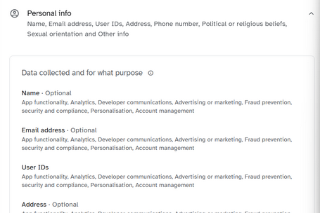

Is Instagram Threads falling apart at the seams?
If you want to join threads so badly have you considered taking up knitting?
Now as you may have been able to guess from someone
who is a fan of personal privacy, I do not like Meta.
It's nearly always a red flag when a data scandal you
were involved in has its own Wikipedia page.
So I'll admit, I was skeptical when Meta
announced it was launching their own rival to Twitter
known as Threads. In the interest of open-mindedness,
I decided to see how right (or wrong, on the off
chance hell has frozen over) this skepticism was.
This isn't Meta's first copycat rodeo
See, Meta (well, this was still in the Facebook days) tried something called Threads before. It launched in 2019 and the aim was to let users send or receive messages, photos, videos, and stories. It was, in fact, a similar concept to the newest Threads, but instead of trying to challenge Twitter, they were hoping to compete with Snapchat. It got killed off in December 2021, to little sadness.
Threads... 2!
Threads 2.0 launched on the 6th July 2023. By the 10th July, it had surpassed 100 million users. All that just made it even funnier when, upon finding it on the Google Play Store, I was met with:
That is indeed 2.7 stars, based on 150 thousand
reviews left by some of the 50 million+ downloads.
The Apple App Store is slightly more positive, at 3.5
starts, which comes from 2.2 thousand reviews. Most
complaints from Android users revolve around the app
crashing or bugging when you try to do, well, more or
anything. Six of the ten reviews that Apple let me
read give it 3 stars, citing lack of features as the
main reason it could be improved (Threads only got a
chronological feed as of the 26th July).
Where the fun really starts is the data
safety section.
Apple lists:
Don't like that.
We also see the return of our old friend Unspecified
Other Data, which may be collected and linked to
your identity! What other data? Well, I wish I knew.
Google has more detail. This much more, specifically:
(You can read it properly here.)
Behind those little dropdown arrows are more boxes such as:

Don't like that at all.
I'd really recommend you have a look through it
yourself, to see what they use each piece of
information for, as well as what is optional to share
(eg, precise location), and what can't be turned off
(eg, approximate location).
Threads also isn't available in the EU, which, as
I mentioned last time
I talked about a service not available in the EU,
is somewhat of a red flag. Meta even confirmed it's
been blocking attempts to access the app through a VPN.
The CEO of Instagram said
this was due to “complexities with complying with some of
the laws coming into effect next year”, though decided not
to mention which laws those might be. That being said,
he's probably talking about the Digital Markets Act
(DMA). This act will make it so that large online
platforms (such a Meta) cannot prevent consumers
linking up to businesses outside their platforms,
track users outside of the core platform service for
advertising purposes without consent of the user, or
treat services offered by the platform itself more
favourably in rankings vs similar services offered
by third parties (
amongst other things
).
Not looking fantastic!
Anything fun in the T&Cs?
Well, you need an Instagram account to make a Threads one, this is a fact presented to you when you try to sign up. What they don't mention as clearly is the fact that you can't delete your Threads account without also deleting your Instagram one - the best you can do is simply deactivate it, hiding it + any content from users but still leaving the data on their servers.
Also the Meta headquarters is at 1 Meta Way, California, USA, which is entirely irrelevant to this article but annoys me in a way I cannot quite put into words.
Conclusion?
It's funny that right at the start of writing this I said
the words "open-minded" alongside "Meta". If you came here
for unbiased anything then you took more than a few
wrong turns on the way.
I am honest-to-god baffled as to how Threads got
this big this fast. I thought we had all agreed Twitter
was an online cesspool why did so many people jump ship
to the Twitter knockoff made by Facebook of all people.
Genuinely please if you have Threads explain me your thought process I
truly want to know.